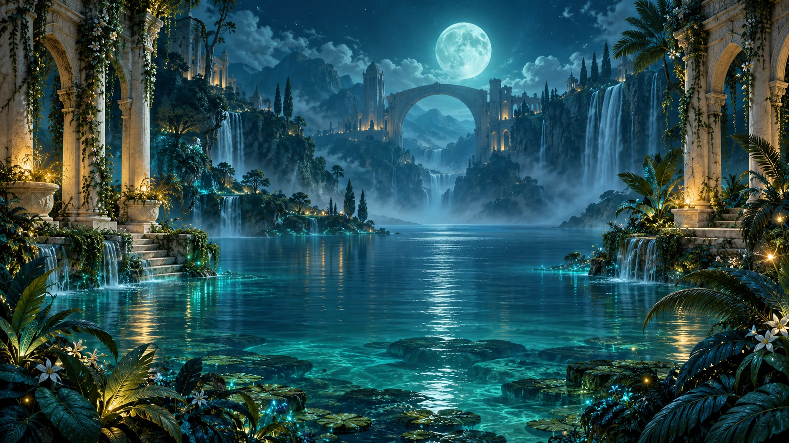
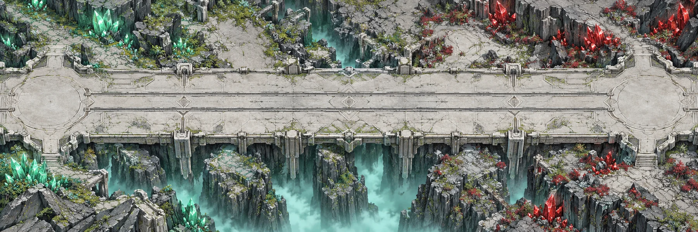

◇
LUMINA
Выберите свой мир

МИР 01ПРИКЛЮЧЕНИЕ · ДЗЕН✧
Сады вечного света
Тихая магия кристаллов.
Тридцать уровней и бесконечный дзен.
Войти в сады →Ваше путешествие начинается

МИР 02СТРАТЕГИЯ · ПРОТИВ ИИ⟐
Кристальный фронт
Каждая комбинация питает вашу армию.
Прорвите оборону и захватите разлом.
На передовую →Три уровня сложности
ДВА МИРА. ОДИН ИСТОЧНИК СВЕТА.